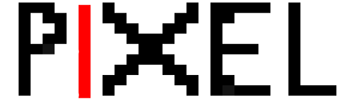

Pixels are the basic units of any image.Pixel Art is basically drawing out an image with jagged edges more like an image zoomed in to a great extent.This gives it a distinct unique feel .Here is an example of one of the images drawn out using this application.
Some Tips on how this tool works and how to use it :- The block size is by default 20px and blue colour .
- The box is moved in different directions using the direction arrows on your keyboard
- Color can be selected using color picker .It supports all the 16777216 colors . No alpha channel support presently.
- All identification of blocks is through the top left corner => drawing a block of 50px side followed by another block to the right with 20px width will result in no visible output
- To save your creation by clicking on covert to image button . This converts canvas to image which can be downloaded by right click on image -> Same Image As.
- Image is available as png with transparent background
- The size entry box doesnt focus out if value is not changed. Workaround click on background if value is not changed.
- No way to find out current position . Temporary workaround change color to known color move and erase by setting color to white.